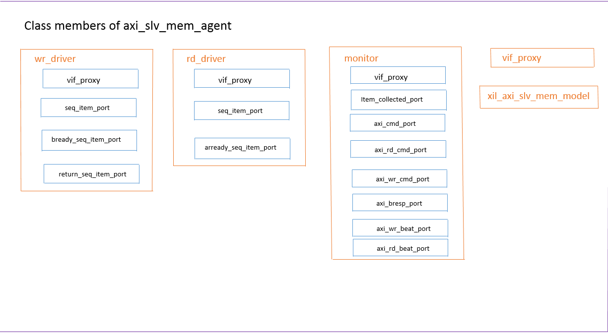

AXI Slave Agent with Memory model. It inherits all the features of axi_slv_agent and adds a memory model.
axi_monitor `AXI_PARAM_ORDER monitor;
axi_slv_wr_driver `AXI_PARAM_ORDER wr_driver;
axi_slv_rd_driver `AXI_PARAM_ORDER rd_driver;
axi_vif_mem_proxy `AXI_PARAM_ORDER vif_proxy;
xil_axi_slv_mem_model `AXI_PARAM_ORDER mem_model;
axi_slv_mem_agent includes a monitor, a read driver, a write driver and vif_proxy and a memory model. Please refer below picture for more details about axi_slv_mem_agent. 
| function new( |
| ) |
Constructor to create an AXI Slave Agent with memory model,~name~ is the instance name and axi_vip_if is the interface in the design. Please see PG267 for how to find the interface in design hierarchy.
| virtual function void set_agent_tag( |
| ) |
Sets the tag of the axi_slv_mem_agent and all sub classes.
Enables the READ and WRITE drivers in this agent to start collecting data. The drivers will only issue transactions when the send functions are called Fill in memory model with write transaction data and fill read transaction data with data from memory model